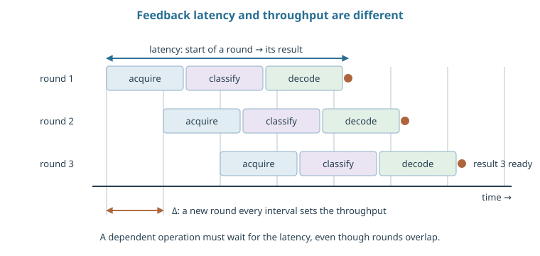
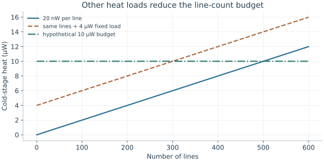

Starting point: Chapters 1–15; physical concepts and approximations are introduced as needed.
Anchor example: A gate command with a finite latency and heat budget.
This lesson includes explanations, worked examples, and problems with solutions. Advanced results whose proofs are outside the chapter are identified explicitly.
Every platform needs classical machinery around it: a refrigerator or a vacuum chamber, signal lines, waveform generators, and processors that read results and decide what to do next. A gate is a timed physical signal, and a measurement is a signal that must be interpreted. Is that machinery a detail, or is it part of what limits the quantum computer?
We first ask what cooling and vacuum must achieve, which follows from thermal occupation and collision rates. Following a pulse down its delivery line shows that the line filters the signal, so the pulse at the device differs from the one programmed. Representing waveforms by two quadratures connects digital values to rotation axes and shows how timing errors become phase errors. Asking how fast measured results must be processed separates latency from throughput. Finally we count heat at each cold stage, and the time spent calibrating instead of computing.
Our first question is what cold and vacuum must achieve for a qubit.
16.1 Operating Conditions
Each platform's error models assumed a cold, quiet environment. How cold and how empty must that environment be, and does the signal that reaches the device match the one we sent? Thermal occupation and collision rates translate an error target into cooling and vacuum requirements. The delivery path then acts as a filter, so pulses arrive changed.
16.1.1 Cryogenics and vacuum
Does a cold refrigerator make every mode cold? A refrigerator controls the temperature of a stage, not of every degree of freedom attached to it. For a mode of angular frequency \(\omega\) in thermal equilibrium, summing the Boltzmann weights of its equally spaced levels, as we did for ion motion, gives the mean occupation
\[\bar n=\frac1{e^{\hbar\omega/(k_BT)}-1}.\]
A small thermal occupation requires \(\hbar\omega\) to be large compared with \(k_BT\).
What does vacuum protect against? Trapped ions and atoms can be knocked out or disturbed by collisions with background gas. Take a dilute gas of density \(n\), cross section \(\sigma\), and relative speed \(v\). The collision rate is \(\Gamma=n\sigma v\), and by the constant-rate argument the probability of no collision in a time \(t\) is \(e^{-\Gamma t}\). The cross section and speed depend on the species and the gas. So cooling and vacuum targets follow from the error process and the length of the workload, not from one universal number.
16.1.2 Optical and microwave delivery
Does the device receive the pulse we programmed? A delivery line filters the signal as well as any noise. For a linear, time-invariant path, the voltage at the device is
where \(h\), the impulse response, is the output produced by a very short input pulse. A sharp edge at the source can arrive rounded or ringing.
How much does a simple line distort a step? A low-pass path obeys \(\tau\dot v_{\rm device}+v_{\rm device}=v_{\rm source}\). For a voltage step of height \(V\), the solution is \(V[1-e^{-t/\tau}]\). If a gate lasts about as long as \(\tau\), its actual pulse area differs from the programmed one, so calibrating only the programmed amplitude misses the error. Deliberately distorting the programmed pulse can compensate a measured response, within the bandwidth and range of the electronics. It cannot restore frequencies the path removed, or cancel drift that was never measured.
Problem 16.1. A mode with \(\hbar\omega/(k_BT)=5\) is in thermal equilibrium. What is its mean occupation?
Worked solution
\(\bar n=1/(e^5-1)\approx0.00678\). This assumes the mode is actually in equilibrium at the stage temperature, which must be checked separately.
16.2 Classical Control
The control electronics must produce waveforms with exact phases and react to measurement results in time. How does a digital waveform set a rotation axis, and how fast must results be processed? Writing a waveform as two quadratures connects stored numbers to drive phases and turns timing errors into phase errors. Following a measured result through its processing stages then separates the delay before a result is ready from the rate at which results are handled.
16.2.1 Waveforms and synchronization
How do stored numbers become a rotation axis? Represent a microwave waveform by two slowly varying quadratures, \(v(t)=I(t)\cos\omega_ct-Q(t)\sin\omega_ct\), where \(\omega_c\) is the carrier frequency. Constant quadratures can be written as an amplitude \(A\) and phase \(\phi\), with \(I=A\cos\phi\) and \(Q=A\sin\phi\). So the pair \((I,Q)\) sets both the pulse strength and the drive phase that fixes the rotation axis.
What does a timing error do? A delay \(\delta t\) changes the carrier phase by \(\omega_c\delta t\). At 5 GHz, 1 ps gives about 0.0314 radians, or 1.8 degrees. Whether this matters depends on how clocks and mixers share phase references. A delay common to every channel need not act like independent jitter on each pulse. The drive, readout triggers, and feedback must therefore share a common timing reference.
16.2.2 Feedback and decoding
Why must measured results be processed quickly at all? Error correction measures the checks of a code repeatedly; one repetition of all checks is a syndrome round. A classical algorithm, the decoder, infers the most likely errors from the history of syndromes. Using a measured result to choose a later operation is called feed-forward. Each result passes through acquisition, discrimination, decoding, and feed-forward, and their delays add.
Does a long delay force the device to wait? If each round produces \(b\) bits every \(\tau\) seconds, results arrive at \(b/\tau\) bits per second. A pipeline can take longer than \(\tau\) to finish one round and still accept a new round every \(\tau\). A five-round processing delay with one completed output per round therefore does not force every round to pause. It does delay any operation that depends on that particular result. If the mean processing rate falls below the arrival rate, the queue grows without bound, and even an adequate mean rate can suffer from rare slow rounds.
Must every correction be applied at once? Not when it is a Pauli correction. Clifford gates turn Pauli errors into other Pauli errors, so the controller can record the corrections in software and reinterpret later results. This is Pauli-frame tracking. A later non-Clifford gate, whose correct form depends on the recorded Paulis, imposes a real deadline.

Rectangles represent classical acquisition and processing intervals. Overlap shows pipelining, not instantaneous feedback. The times are schematic; a dependent gate must still wait for its result.
Problem 16.2. A syndrome round takes 1 μs and decoding latency is 5 μs. Must every round wait 5 μs?
Worked solution
Not necessarily. A pipelined decoder can accept one round per microsecond while returning results five rounds later. Operations that require those results still face the latency, and sustained throughput must keep up.
16.3 System Budgets
A processor grows by adding lines, electronics, and calibrations, and each has a cost. How many control lines can a cold stage carry, and how much of the machine's time goes to computing? A heat budget per stage bounds the line count. A duty-cycle budget then shows how calibration and drift take time away from computation.
16.3.1 Heat, bandwidth, and wiring
How many lines can one cold stage carry? Write the heat deposited at that stage as \(P_{\rm total}=Nq_{\rm line}+P_{\rm active}+P_{\rm background}\). Each term counts heat at that stage, not at room temperature. The admissible line count then satisfies
With a hypothetical budget of 10 μW and 20 nW per line, neglecting all other loads gives 500 lines. With 4 μW already committed, the same arithmetic allows only 300. Sending several signals down one line reduces the count but raises bandwidth demands, crosstalk, or the dissipation of local electronics. So a budget lists its assumptions stage by stage and for each operating mode.
16.3.2 Calibration and stability
How much of the time does the machine actually compute? If a cycle spends \(t_c\) calibrating, \(t_a\) acquiring useful data, and \(t_o\) on other overhead, the useful fraction is \(t_a/(t_c+t_a+t_o)\). Fifteen minutes of calibration per hour already limits it to 0.75.
Why not calibrate less often? Because parameters drift. Suppose a frequency drifts as \(\delta\omega(t)=at\) after calibration. An idle interval of length \(\tau\) at age \(t\) then accumulates about \(at\tau\) of phase, if the drift is slow during the interval. A phase tolerance therefore fixes the age at which recalibration is due. Real drift can be random and involve many parameters at once, which is why validation circuits run at recorded times, rather than a fixed maintenance interval, decide when to recalibrate.

All quantities refer to the same hypothetical temperature stage. The line-only bound is 500; a 4 μW fixed load reduces it to 300. This is accounting, not a refrigerator specification.
Problem 16.3. If calibration takes 15 minutes each hour, what fraction remains for data collection?
Worked solution
At most 45/60 = 75%, before other overhead. Useful execution estimates should include this duty cycle rather than reporting only pulse time.
Infrastructure limits which operations can run together and when. How should a whole processor be arranged so that an algorithm's gates, measurements, and movements fit inside those limits?
Worked model check. A decoder receives 200 bits per 2 μs round. What sustained input rate is needed? Can a 10 μs latency coexist with sufficient throughput?
Worked solution
The rate is \(200/(2\times10^{-6})=10^8\) bits/s. A five-round pipeline may have 10 μs latency while accepting one complete round every 2 μs; dependent operations must still wait.
These exercises draw on the whole chapter. Attempt each question before opening a hint, explain your reasoning, then compare it with the worked solution.
Find the thermal occupation \(\bar n=1/(e^{\hbar\omega/k_BT}-1)\) of a \(5\) GHz resonator at \(50\) mK and at \(200\) mK, using \(hf/k_B\approx0.24\) K. What do the numbers imply for readout resonators connected to warmer stages?
Hint 1
Ratios \(4.8\) and \(1.2\).
Hint 2
\(e^{4.8}\approx122\), \(e^{1.2}\approx3.3\).
Worked solution
At \(50\) mK, \(\bar n\approx1/(122-1)\approx0.008\); at \(200\) mK, \(\bar n\approx1/2.3\approx0.43\). A resonator whose effective temperature is set by an inadequately filtered line from a warmer stage can hold a substantial thermal photon population, which dephases the qubit through the dispersive shift. Attenuation and filtering must bring the effective temperature down, not just the refrigerator stage.
A timing offset \(\delta t\) shifts the phase of a carrier at \(f_c\) by \(2\pi f_c\delta t\). Evaluate it for \(1\) ps at \(6\) GHz, in radians and degrees. Why might a common timing shift on all channels matter less than independent jitter?
Hint 1
\(2\pi\times6\times10^9\times10^{-12}\).
Hint 2
A common shift changes every pulse’s phase reference together.
Worked solution
\(2\pi\times6\times10^{-3}\approx0.038\) rad, about \(2.2^\circ\). If every channel and the readout shift together, the relative phases between pulses on the same qubit are unchanged, much like a frame change; independent jitter randomizes relative phases from pulse to pulse and causes dephasing-like errors. Clock distribution must control relative timing between channels.
A processor with \(1000\) qubits produces one syndrome bit per qubit every \(1\) μs. What sustained data rate must the decoding system accept? If acquisition alone adds \(2\) μs of latency, must the syndrome rounds slow down?
Hint 1
Rate \(=b/\tau\).
Hint 2
Latency and throughput are different.
Worked solution
\(1000\) bits per μs, \(10^9\) bits per second. A \(2\) μs acquisition latency does not slow the rounds if the pipeline accepts a new round every microsecond; it only delays operations that need the result. The machine stalls only if a dependent decision must wait, or if the average throughput falls below the incoming rate.
A control line behaves as a first-order low-pass filter with \(\tau=2\) ns. A rectangular pulse of amplitude \(V\) and duration \(T=20\) ns is sent. (a) Find the pulse area delivered during the \(20\) ns window, \(V[T-\tau(1-e^{-T/\tau})]\). (b) Show that the total area including the tail after the window is \(VT\). (c) Why does this matter for back-to-back gates?
Hint 1
\(e^{-10}\approx0\).
Hint 2
The filter’s impulse response integrates to \(1\).
Worked solution
(a) \(V[20-2(1-e^{-10})]\approx18V\) ns: \(10\%\) of the area is missing within the window. (b) After the source switches off, the output decays as \(e^{-t/\tau}\) from about \(V\), adding area \(\approx2V\) ns, for a total of \(20V\) ns: a low-pass filter preserves the total area but spreads it in time. (c) The delayed tail overlaps the next pulse, so the first gate is under-rotated and the second receives an unintended extra rotation. Predistortion or adequate spacing is needed, and calibration must use the actual sequence timing.
A decoder receives one round every \(2\) μs. (a) If it needs \(1.8\) μs on average per round, what happens to the backlog? (b) If it needs \(2.2\) μs, how far behind is it after \(10^6\) rounds (\(2\) s)? (c) Why can a decoder with adequate mean speed still cause problems?
Hint 1
Backlog grows by \((t_{\rm process}-t_{\rm round})\) per round when positive.
Hint 2
\(0.2\ \mu\mathrm s\times10^6\).
Worked solution
(a) It keeps up, with idle time of \(0.2\) μs per round on average. (b) It falls behind by \(0.2\) μs per round, so after \(10^6\) rounds it lags by \(0.2\) s, and the lag keeps growing: any operation waiting on a decoded result is delayed further and further. (c) Processing times vary; rare slow rounds create temporary backlogs that delay feed-forward decisions, and if the mean is close to the round time, recovery from such bursts is slow. Long tails, not just the mean, must fit within the computation’s deadlines.
A qubit frequency drifts linearly after calibration at \(a/2\pi=1\) kHz per hour. A computation tolerates a phase error of \(0.01\) rad over \(100\) μs idle intervals. (a) Using phase \(\approx at\tau\), find the maximum calibration age \(t\). (b) If each recalibration takes \(10\) s, what duty fraction results? (c) What does this imply as the number of qubits grows?
(a) \(t\le0.01/(1.75\times10^{-4})\approx57\) s: recalibration roughly every minute. (b) Duty fraction \(57/(57+10)\approx0.85\). (c) If calibration time grows with the number of qubits while the tolerance stays fixed, the duty fraction falls; large machines need faster or parallel calibration, drift-insensitive operations, or tracking that corrects drift during computation.
An ion trap operates at pressure \(10^{-9}\) Pa and \(300\) K. (a) Find the gas density \(n=P/k_BT\). (b) With cross section \(10^{-18}\ \mathrm{m^2}\) and relative speed \(10^3\) m/s, find the collision rate per ion and its mean time between collisions. (c) For a chain of \(100\) ions, how often does some ion suffer a collision?
Hint 1
\(n=10^{-9}/(1.38\times10^{-23}\times300)\).
Hint 2
\(\Gamma=n\sigma v\).
Worked solution
(a) \(n\approx2.4\times10^{11}\ \mathrm{m^{-3}}\). (b) \(\Gamma\approx2.4\times10^{11}\times10^{-18}\times10^3\approx2.4\times10^{-4}\ \mathrm{s^{-1}}\): about one collision per \(70\) minutes per ion. (c) With \(100\) ions, about one collision every \(40\) s somewhere in the chain. A collision can reorder or eject ions and heat the chain, so long computations on large registers need better vacuum, cryogenic pumping, or recovery procedures.
A student says: “The mixing chamber is at \(10\) mK, so my \(7\) GHz readout resonator has essentially zero thermal photons.” Suppose imperfect line attenuation leaves the resonator at an effective \(60\) mK. Compute \(\bar n\) and explain why this matters even though it is small.
Hint 1
\(hf/k_B\approx0.34\) K at \(7\) GHz; ratio \(5.6\).
Hint 2
Thermal photons shift the qubit frequency at random through the dispersive coupling.
Worked solution
At \(60\) mK, \(\bar n=1/(e^{5.6}-1)\approx3.7\times10^{-3}\), whereas at \(10\) mK it would be about \(e^{-34}\approx0\). Each thermal photon shifts the qubit frequency by about \(2\chi\), and photons entering and leaving at random cause dephasing at a rate that grows with \(\bar n\); for typical parameters this can limit \(T_2\) to tens or hundreds of microseconds. The relevant temperature is the mode’s effective temperature, set by its coupling to all lines and stages.
Choose a recalibration interval \(T\) that balances availability against drift error. Assume the phase error grows linearly with age and must stay below a tolerance reached at age \(57\) s (from the worked problem), and each recalibration takes \(t_c=10\) s. (a) What is the largest allowed \(T\), and the duty fraction? (b) If an improved procedure halves the drift rate, how do both change? (c) If instead calibrations become twice as fast, which improvement is worth more?
Hint 1
Halving the drift doubles the allowed age.
Hint 2
Duty fraction \(T/(T+t_c)\).
Worked solution
(a) \(T=57\) s, duty fraction \(\approx0.85\). (b) Halving the drift allows \(T=114\) s, giving \(114/124\approx0.92\), with the same error. (c) Faster calibration (\(t_c=5\) s) at the original \(T=57\) s gives \(57/62\approx0.92\) too. In this simple model the two improvements are equivalent; in practice, reducing drift also lowers the error between calibrations, while faster calibration reduces time lost, so the choice depends on what the workload is sensitive to.
A fault-tolerant algorithm must apply \(10^3\) logical non-Clifford gates in sequence, each of which requires a decoded correction before the next can proceed (a real deadline, not deferrable by Pauli-frame tracking). The decoding latency is \(10\) μs and a syndrome round takes \(1\) μs. (a) How much waiting time do these deadlines add? (b) Compare with the time spent on syndrome rounds if each gate needs \(20\) rounds. (c) Name two ways to reduce the latency cost.
Hint 1
Waiting \(=\) number of dependent gates \(\times\) latency.
Hint 2
\(20\) rounds per gate at \(1\) μs each.
Worked solution
(a) \(10^3\times10\ \mu\mathrm s=10\) ms of waiting. (b) The rounds themselves take \(10^3\times20\ \mu\mathrm s=20\) ms, so latency adds \(50\%\) to the runtime. (c) Faster decoders (dedicated hardware near the cryostat), and scheduling techniques that prepare both possible next operations in advance and choose afterwards, or that reorder independent work into the waiting time. Latency becomes part of the algorithm’s running time whenever later operations depend on earlier measurement results.